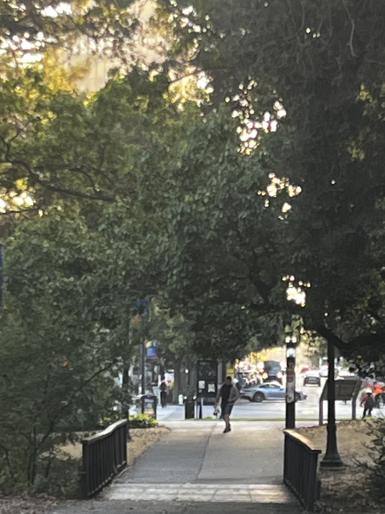

Project 0: Becoming Friends with Your Camera
Part 1: Selfie - The Wrong Way vs. The Right Way
Comparing close-up distorted selfies with zoomed-in portraits taken from a distance to understand how camera distance affects facial proportions and perspective distortion.
Part 2: Architectural Perspective Compression
Demonstrating perspective compression by photographing urban scenes with telephoto zoom from far away versus wide-angle shots from close up, showing how focal length affects depth perception.


Part 3: The Dolly Zoom (Vertigo Effect)
Creating the classic "Vertigo shot" by simultaneously moving the camera backward while zooming in, maintaining subject size while dramatically changing background perspective and creating a disorienting visual effect.